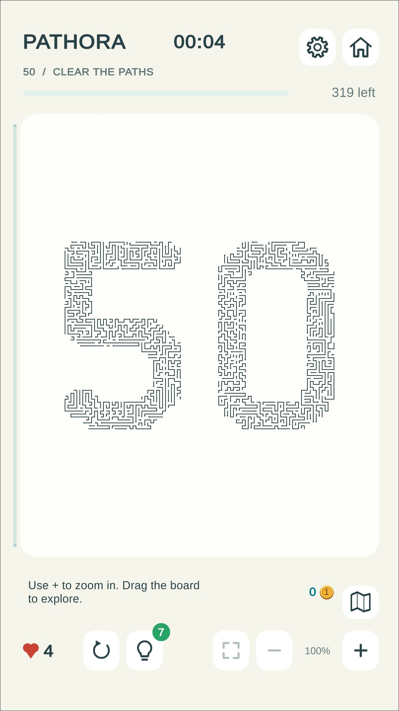
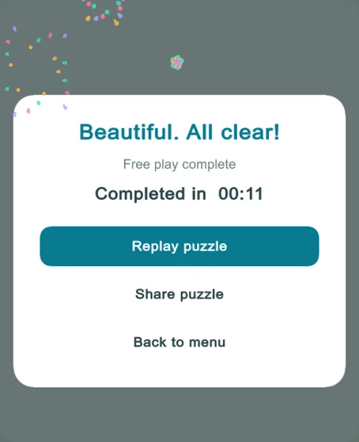
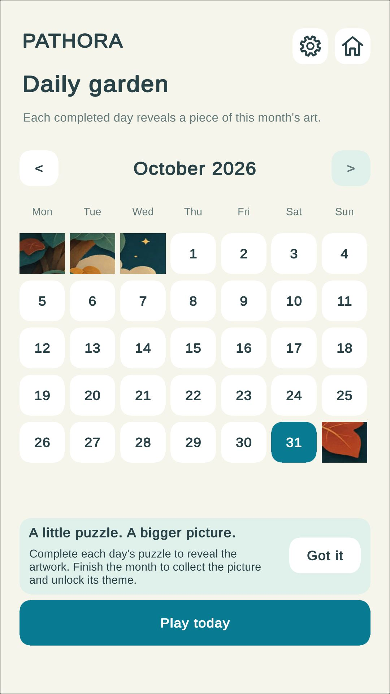
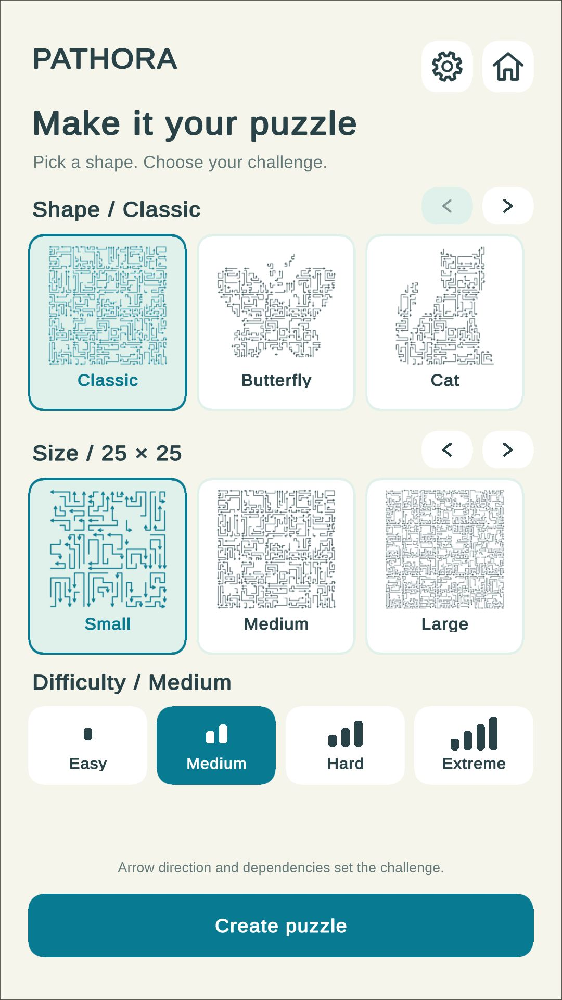
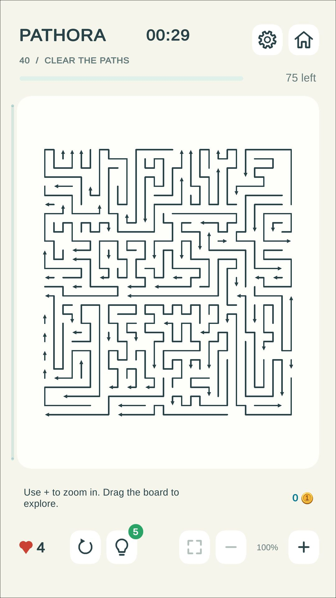
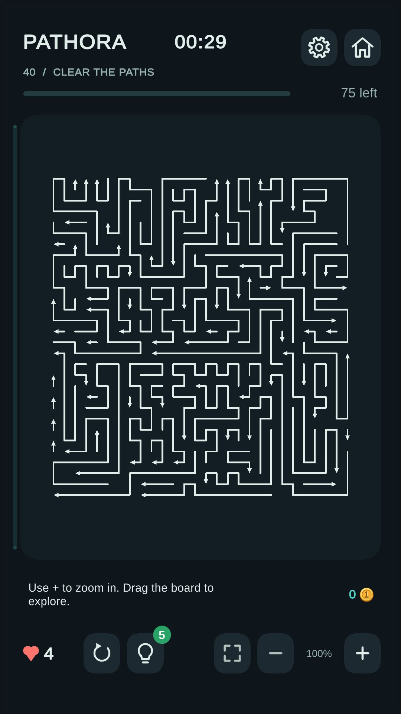
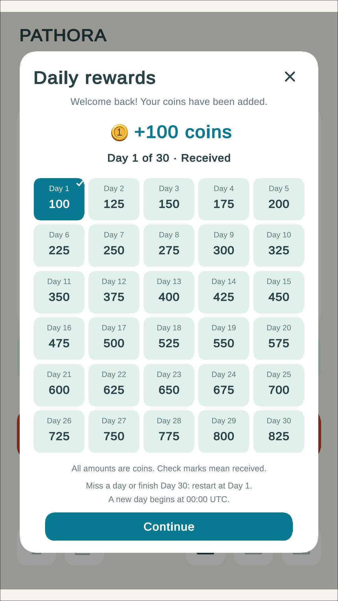
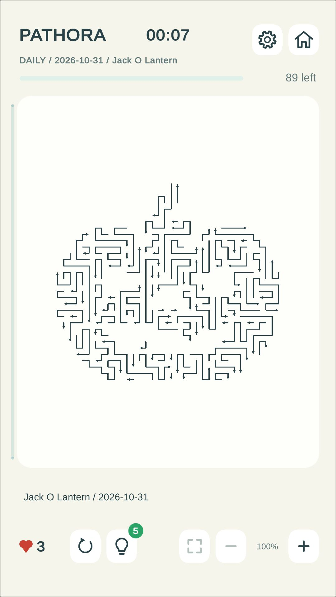

Find an open path.
Look in the direction the arrow points. If nothing blocks its way, it can leave the board.

A LITTLE SPACE TO THINK
A tangle of arrows. A moment of focus.
Clear the board, one thoughtful move at a time.
A thoughtful puzzle for teens aged 13 and over and adults.

THE IDEA IS SIMPLE
The fun is finding the right order.
Look in the direction the arrow points. If nothing blocks its way, it can leave the board.
Each arrow that leaves can open a path for another. The order is the puzzle.

The last arrow slips away and the whole board is yours again.

YOUR NEXT LITTLE CHALLENGE
From your first clear path to a board
you can truly get lost in.
Start simple, then explore winding paths, compact challenges and number-shaped milestones. Every campaign stage starts with at least three hearts.
A gentle start. A growing challenge.
Find a new shape each day, play unfinished past challenges, and see your completion times in the calendar. Each completed day reveals part of the monthly artwork. Finish the whole month to collect it in your album and unlock its matching light and dark theme.
Unlocks after completing stage 10.
Pick a classic board or a playful shape, choose one of five sizes from 10 × 10 to 100 × 100, and set the difficulty from Easy to Extreme. Share a puzzle link with a friend to play the same layout and compare your times. Or choose Zen: unlimited hearts and hints, with an optional rewarded video to start.
Unlocks after completing stage 30.A CLOSER LOOK

Find an open arrow, clear a path and make room for your next move.

Switch between light, dark and system appearance in Settings.

Collect coins once a day. Your reward grows across a 30-day streak, then starts again. Missing a day resets the streak.

Solve a daily puzzle to reveal another piece of the monthly artwork.
MAKE YOURSELF COMFORTABLE
Pick up where you paused. Saved stages and Free Play puzzles keep your place.
Look a little closer. Pinch to zoom, move around the board, or fit the whole puzzle into view.
Keep it calm. Choose light, dark or system appearance, unlock seasonal themes, and enjoy gentle music with independent volume controls. Adjust effects, vibration and reduced motion in Settings.
Celebrate your milestones. Browse 20 achievements inside the game and keep cloud saves through Google Play Games on Android. An internet connection and a connected Play Games profile are needed for cloud synchronization.
CHOOSE YOUR WAY TO PLAY
Play on iPhone, iPad, Android or in your browser.
The web edition is ready to explore. Open the game and find your first clear path.
Play nowPathora is now available on Google Play. Take campaign puzzles, daily discoveries and Free Play with you on your Android phone or tablet.
Bring your campaign and daily puzzles to iPhone or iPad.
GOOD TO KNOW
Pathora is designed for teens aged 13 and over and adults who enjoy spatial puzzles and planning ahead. It is not directed to children under 13.
Yes. The current Android game generates its stages and daily puzzles locally. Ordinary campaign, daily and Free Play puzzles work offline after installation. Optional rewarded ads, including starting a new Zen puzzle, require an internet connection.
You do not need a separate Pathora account to play. With Google Play Games integration: when signed in through Google, progress syncs automatically from the main menu and earned achievements are reported to Google. Local play remains available without a connection. Manage automatic sign-in through your Play Games settings.
Continue stages returns you to your unfinished campaign stage. Free Play has a separate saved puzzle that you can resume from its settings screen.
Rewarded ads are optional. Where available, watch one for an extra heart, more hints or a new Zen puzzle. There are no banners or automatic ad breaks. See our Privacy Policy for SDK data handling.
Email pathora@afsanora.com. For technical issues, your device model, Android version and a description of what happened can help us investigate. Please avoid sending sensitive personal information.